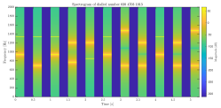
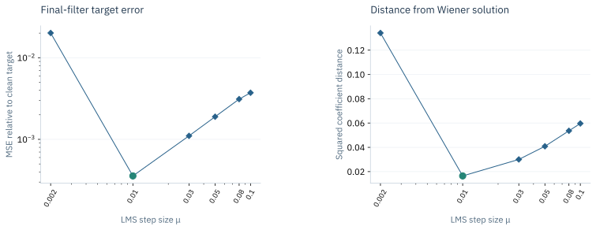
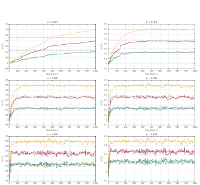

Statistical signal processing & inference
Finite-record estimation, spectral analysis and the convergence–misadjustment trade-off.

The research question
How do estimator settings and adaptive-filter parameters change the conclusions supported by finite signal records?
An individual coursework study connecting random-signal estimation, autoregressive modelling, spectral analysis and Wiener/LMS filtering. Selected evidence covers time–frequency analysis of a generated DTMF sequence, the effect of LMS step size, and interpretation of R–R interval spectra.
Use analytical assumptions to interpret numerical estimates
Adaptive-filter update
The LMS update adjusts coefficients using the current prediction error and input vector. Step size changes how quickly the filter adapts and the variability remaining after adaptation.
Evaluation definition
Table 7 evaluates MSE_y by applying the final LMS coefficients as a fixed FIR filter to the dataset. This differs from an error evaluated over the time-varying adaptive output.
What the work shows
Download transcribed Table 7 values (CSV)
Adaptive-filter error at six tested step sizes

Convergence over the available record

Breathing conditions and RRI spectra

LMS settings change the finite-record result
Among six tested step sizes, μ = 0.010 gives the lowest final-filter MSE relative to the clean target (0.000357) and the lowest squared distance to the Wiener coefficients (0.016459). The smaller μ = 0.002 leaves substantially greater error over the available record. These runs support a convergence–misadjustment trade-off within the tested setup; they do not identify a universally optimal step size.
Spectral estimates depend on the analysis window
The R–R interval analysis compares standard periodograms with 50 s and 150 s segment averaging under three breathing conditions. Peaks near the imposed breathing frequencies are consistent with respiratory modulation of heart rate. Their appearance also depends on the analysis window.
Project scope
Scope and reproducibility
The LMS comparison uses the values reported in coursework Table 7. Repeated runs with different random seeds would help assess the stability of the step-size ranking. The R–R interval analysis demonstrates spectral-estimation methods in an educational laboratory setting.